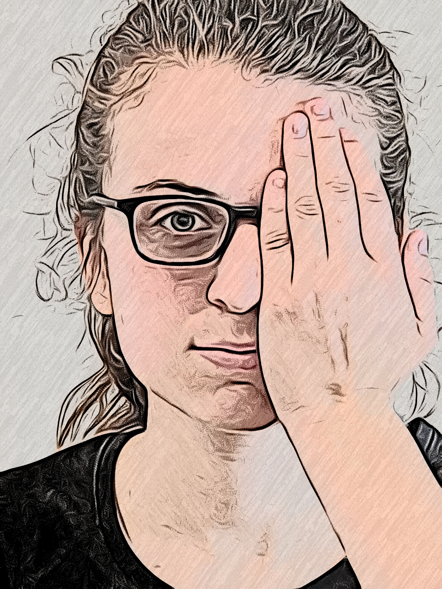

<div class="topleft">
<ion-menu-button></ion-menu-button>
</div>
<h2 *ngIf="next; else elseblock">
    <babyChart2 [leftVision]="m"></babyChart2>
</h2>
<ng-template #elseblock>


    <h2 *ngIf="notdone; else joe">
        {{setFontSize(fontSize)}}
        
        <div class="square" [style.width.px]="width" [style.height.px]="width" [style.border-width.px]="border" style="border-style: solid; border-color: black;"></div>

        <div class="chartletters">
        <p id="chart">
            {{d}}
            
        </p>

    </div>
    <div class="button">
    <ion-button  color="success" (click)="Success()" size="large">correct</ion-button>
</div>
<div class="buttono">
    <ion-button color="danger" (click)="Failure()" size="large">wrong</ion-button>
</div>
    </h2>
    <ng-template #joe>
        <div class="img">
            
        </div>
        <div class="buttono">
            <ion-button  color="success" (click)="continue()" size="large">continue</ion-button>
        </div>

        <div class="downletters">
        Your left eye vision is <b>20/{{m}}</b>. 
        <br>
        Now cover your left eye and click continue.
    </div>
       
    </ng-template>
    
</ng-template>